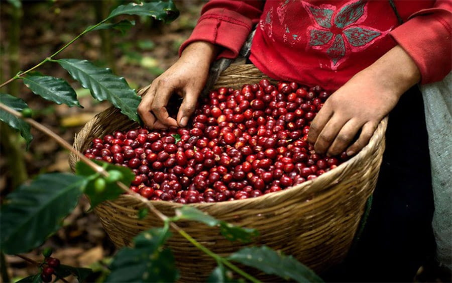
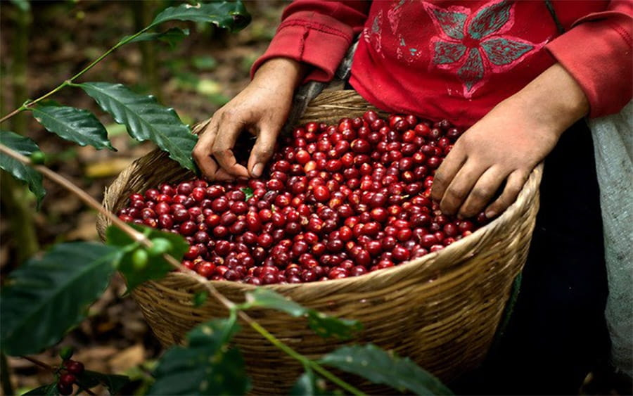

El café, una de las bebidas más consumidas a nivel mundial, tiene una historia que se remonta a varios siglos. Se cree que fue descubierto en Etiopía, donde las leyendas cuentan que un pastor llamado Kaldi notó el comportamiento energético de sus cabras después de consumir los frutos del cafeto. A partir de allí, el café se difundió a través de la península arábiga, alcanzando Europa y las Américas, y se convirtió en un producto de gran importancia económica y cultural.
Historia del Café
Beneficios del Café
El consumo moderado de café puede aportar numerosos beneficios para la salud. Algunos de los más notables incluyen:
- Rico en antioxidantes que ayudan a combatir los radicales libres.
- Puede mejorar la función cerebral, incluyendo la memoria, el estado de ánimo y la vigilancia.
- Incrementa el rendimiento físico al aumentar los niveles de adrenalina.
- Reduce el riesgo de enfermedades como Parkinson y Alzheimer.
- Puede proteger el hígado, ayudando a prevenir afecciones como la cirrosis.
Desventajas del Café
Como cualquier otra sustancia, el café debe consumirse con moderación para evitar efectos negativos. Algunas desventajas incluyen:
- Insomnio y trastornos del sueño si se consume en exceso o demasiado tarde en el día.
- Pueden aparecer síntomas de abstinencia como dolores de cabeza, fatiga e irritabilidad.
- Problemas digestivos, como acidez estomacal o malestar gastrointestinal.
- Riesgo de aumento de la presión arterial, especialmente en individuos sensibles a la cafeína.
Usos del Café
El café es increíblemente versátil y tiene una variedad de usos, que van más allá de ser una simple bebida energizante:
- En la cocina, es un ingrediente estrella en postres como el tiramisú, helados, y pasteles de café.
- En la cosmética, se usa en exfoliantes y mascarillas debido a sus propiedades antioxidantes y antiinflamatorias.
- Los posos de café son un excelente fertilizante natural para plantas, ricos en nutrientes esenciales.
- El extracto de café se utiliza en suplementos dietéticos por su capacidad para ayudar en la pérdida de peso y mejorar el rendimiento físico.
Galería de Imágenes
 

.jpg)
Nuestros Caficultores
En Yamboro, el cultivo del café es una pasión compartida por nuestros caficultores, Henrri Ibata y Edgar Rodriguez. Estos dos expertos han dedicado su vida al perfeccionamiento de la producción de café, aplicando técnicas agrícolas sostenibles y métodos tradicionales que garantizan un producto de alta calidad. Su compromiso con la excelencia ha colocado a Yamboro en el mapa como un productor destacado de café premium.
Los cafetales de Yamboro se encuentran en una ubicación privilegiada en la vereda Aguadas, en el corregimiento de Chillurco, Pitalito, Huila, una región conocida por su altitud y clima ideales para el cultivo de café. Aquí, Henrri y Edgar supervisan cada etapa del proceso de cultivo, asegurando que cada grano de café refleje la riqueza y diversidad del terreno de Yamboro.
Ubicación de Yamboro
Yamboro se encuentra en Pitalito, Huila, específicamente en la vereda Aguadas, en el corregimiento de Chillurco. Esta región es conocida por su terreno fértil y clima ideal para el cultivo de café, lo que contribuye a la alta calidad del café producido aquí. La combinación de altitud, suelo y microclima único proporciona las condiciones perfectas para cultivar granos de café con un perfil de sabor rico y complejo.